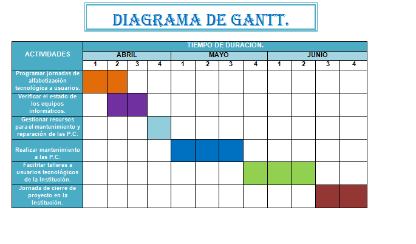
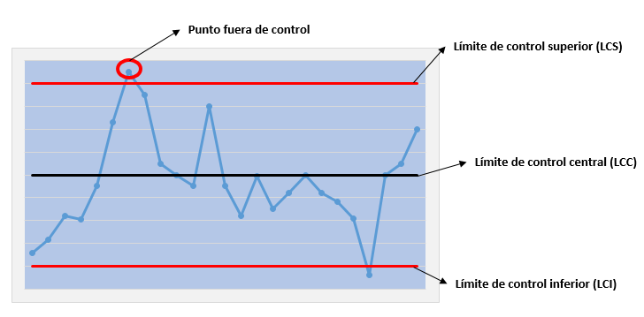
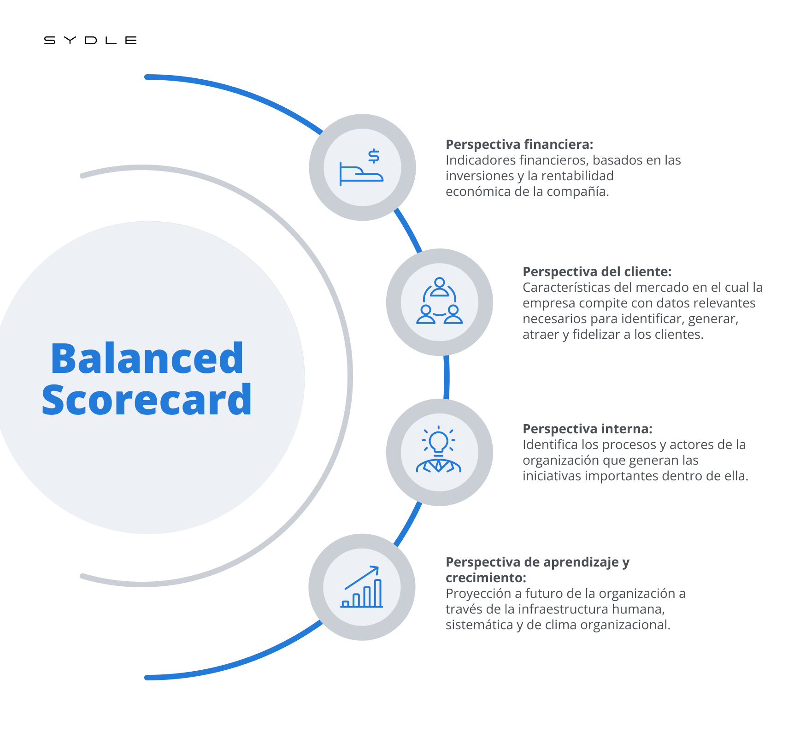

1. Introducción: ¿Qué son las Técnicas de Control?
Las Técnicas de Control son el conjunto de herramientas, métodos y sistemas que utilizan los administradores para medir el desempeño de la organización, compararlo con los estándares establecidos y corregir las desviaciones.
Importancia Vital
Sin medición, no se puede mejorar. El control asegura que la empresa se mueva hacia sus objetivos.
Se clasifican en dos grandes grupos según la naturaleza de los datos que utilizan: Cuantitativas (Números) y Cualitativas (Criterio).
2. Técnicas Cuantitativas: Control Basado en Números 📊
Se basan en datos numéricos, estadísticas y modelos matemáticos. Son objetivas porque los resultados son exactos y son esenciales en finanzas e ingeniería.
A. Financieras y Contables 💰
- Presupuestos: Herramienta fundamental para el Control Presupuestal.
- Estados Financieros: Balance General y Estado de Resultados.
- Análisis de Razones Financieras: Fórmulas para medir la salud financiera (liquidez, rentabilidad).
- Punto de Equilibrio: Cálculo para determinar ventas necesarias para cubrir costos.
B. Investigación de Operaciones 📉
- Técnicas de Trayectoria Crítica (PERT y CPM): Modelos de redes para identificar la ruta crítica de un proyecto.

- Gráfica de Gantt: Herramienta visual para controlar el cronograma. 
- Programación Lineal: Método para optimizar el uso de recursos limitados.
C. Estadística y Calidad ✨
- Muestreo Estadístico: Analizar una parte para inferir la calidad de todo un lote.
- Gráficas de Control: Permiten visualizar si un proceso está dentro de límites de tolerancia. 
- Six Sigma: Metodología para reducir defectos a un nivel casi nulo.
3. Técnicas Cualitativas: Control Basado en el Criterio 💡
Se basan en el criterio personal, la experiencia, opiniones de expertos y factores humanos. Ofrecen una valoración de la situación, no un número exacto.
A. Comportamiento y Recursos Humanos 🧑🤝🧑
- Observación Personal: Supervisión directa ("Management by walking around").
- Evaluación del Desempeño: Análisis de aptitudes blandas y habilidades.
- Evaluación 360°: Visión completa del empleado (jefe, compañeros, subordinados).
- Análisis de Clima Organizacional: Encuestas para medir la satisfacción laboral.
B. Análisis de Problemas (Herramientas Blandas) 🎣
- Diagrama de Ishikawa (Causa-Efecto): Ayuda a identificar las causas raíz cualitativas.

- Lluvia de Ideas (Brainstorming): Generación creativa de soluciones.
- Círculos de Calidad: Grupos voluntarios para resolver problemas de su área.
C. Técnicas de Predicción y Auditorías 🔮
- Método Delphi: Consulta anónima y repetida a expertos hasta lograr consenso.
- Auditoría Administrativa: Revisión de la estructura y políticas de la empresa.
4. Técnica Híbrida: Cuadro de Mando Integral (CMI)
El Balanced Scorecard es una herramienta moderna y completa que logra un equilibrio entre el control numérico y el criterio humano.
Cuadro de Mando Integral (Balanced Scorecard)
Combina indicadores financieros (cuantitativos) con indicadores de satisfacción del cliente, procesos internos y aprendizaje (cualitativos).
5. Cuadro Resumen: Comparativa Clave 📋
| Característica | Técnicas Cuantitativas | Técnicas Cualitativas |
|---|---|---|
| Base | Datos numéricos, matemáticas. | Juicio, experiencia, observación. |
| Objetividad | Alta (el número es exacto). | Subjetiva (depende de la interpretación). |
| Enfoque | "¿Cuánto?", "¿Cuánto tiempo?". | "¿Cómo lo hicimos?", "¿Qué actitud tenemos?". |
| Ventaja Clave | Precisión y tendencias. | Permiten entender el "por qué". |
6. Prueba Rápida: Identifica la Técnica 🧠
Haz clic en el botón para revelar qué técnica aplica al escenario. ¡No hagas trampa!
Escenario: Una auditoría detectó que los costos de materia prima excedieron el presupuesto en un 15%.
Respuesta: ¡Control Cuantitativo (Análisis Presupuestal)! Detecta el problema por un número (15%).
Escenario: Un gerente realiza encuestas para saber por qué la moral de los empleados ha bajado.
Respuesta: ¡Control Cualitativo! Se enfoca en el criterio y el comportamiento (Clima Organizacional).
7. Conclusión: El Principio de Complementariedad 🤝
El control eficaz requiere un equilibrio.
🚨 El Peligro:
- Solo Cuantitativas: Burocracia rígida que olvida a las personas.
- Solo Cualitativas: Desorden y pérdida de rumbo financiero.
✅ Mejor Práctica:
La mejor administración usa los números para detectar dónde está el problema y el criterio cualitativo para entender cómo solucionarlo.